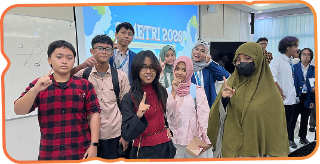
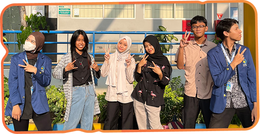
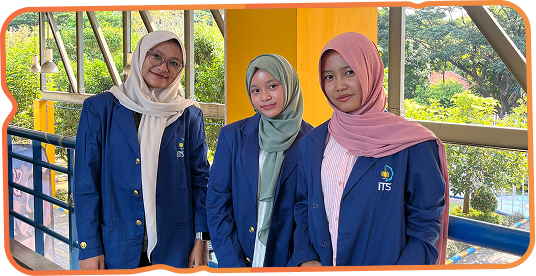

My Portfolio
Fadilah Alifia Ramadhani
Welcome to my world, let's get to know each other!
Explore More

Fadilah Alifia Ramadhani
Hometown: Surabaya
Birthday: August 2, 2010
Tap or click the card to flip it
About Me
Hi there! I'm Fadilah Alifia Ramadhani, but you can call me Lifi. Welcome to my digital space! I'm a curious person who loves trying new things, and I'm always up for a new adventure.
Favorite Activities
Click a card to reveal more
Aku sangat suka berkumpul bersama keluargaku. Aku senang melakukan berbagai kegiatan dan mengunjungi tempat-tempat baru bersama mereka.
Aku suka berkumpul bersama teman-temanku karena itu sangat menyenangkan.
Action • Thriller • Marvel
Aku suka menonton film bergenre action dan thriller.
PUBG • Roblox • Hay Day
Aku suka bermain game bersama teman-temanku ketika ada waktu luang.
My Experience


